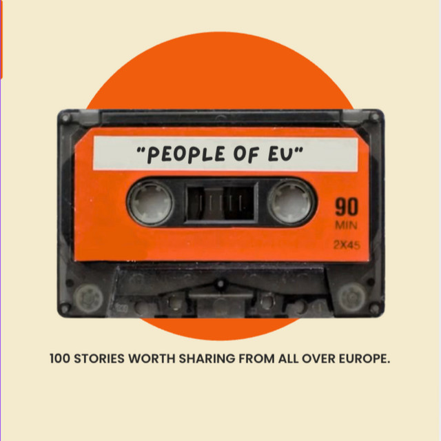
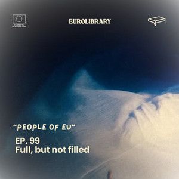
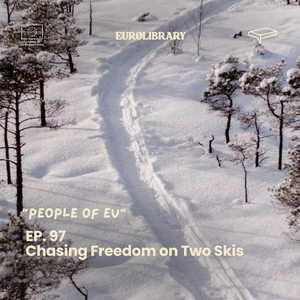
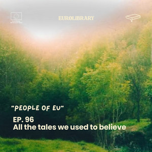
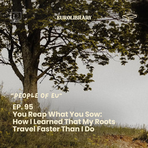
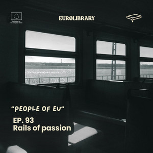
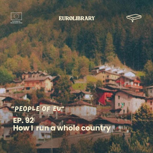
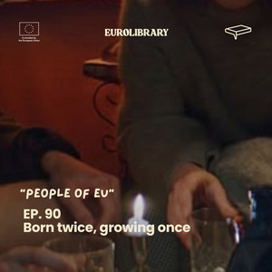
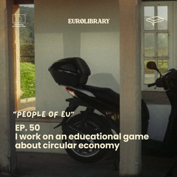

From tulips to olive trees
A story about leaving behind everything you thought defined you, only to discover that the most important thing you carry through life is yourself.
What happens when you truly listen to someone's story? Real voices, real journeys and real experiences from across Europe, told by the people who lived them. No headlines, no stereotypes. Just human stories.

The Human Library puts stories in people's mouths. This podcast carries them further. Each episode is a short personal story, from overcoming anxiety to starting over in a new country, choosing a sustainable life or finding identity through sport.
Filter by theme, search by word or let us choose for you. Press play and the episode opens right here.
Showing 13 of 13 episodes
A story about leaving behind everything you thought defined you, only to discover that the most important thing you carry through life is yourself.

A story about overcoming a hidden struggle with food and finding self-acceptance through courage and healing.
A story about growing up between countries, cultures and identities, and learning to embrace belonging everywhere and nowhere at once.

A story about a lifelong love for skiing that shapes identity, choices and the courage to follow what truly makes you feel alive.

A story about how childhood compassion turned into environmental action.

A story about planting a tree and discovering that roots grow even when you leave.
A story about body shaming, starvation and learning that health is not punishment.

A story about turning childhood passion into purpose, and using technology to improve train travel in Bulgaria.

A story about discovering unexpected strength through running and turning a simple goal into the wild idea of crossing an entire country on foot.
A story about bullying, emotional dependence and learning how to stand on your own feet.

A story about war, borders and survival journeys.
A story about a child who found freedom on a football field, and carried a dream across countries, rejections and closed doors.

A story about turning learning into play.
No episode matches that search. Try another word or clear the filters.
This is a selection of the series. The player above lists every episode.
Follow People of EU on Spotify so the next story finds you, or meet the method that inspired it.